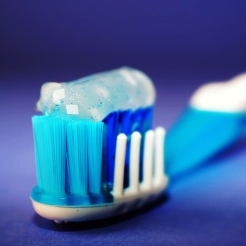
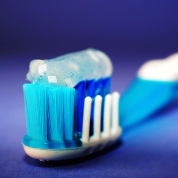

Cuidados com os dentes
 

Não devemos marcar consultas com médicos ou dentistas somente quando já estamos com dores ou problemas sérios. As visitas regulares a esses profissionais contribuem muito para a manutenção de uma boa qualidade de vida. A limpeza profunda realizada pelo profissional também é imprescindível para reforçar os cuidados diários, eliminando as placas bacterianas e o tártaro acumulados. Por isso, frequentar o consultório odontológico é tão importante desde a infância. Quando adotamos essa prática, pelo menos anualmente ou a cada seis meses, recebemos melhores orientações e atuamos na prevenção de quadros mais graves.
Por que rir é importante?
Dezembro, 27, 2022
Não devemos marcar consultas com médicos ou dentistas somente quando já estamos com dores ou problemas sérios. As visitas regulares a esses profissionais contribuem muito para a manutenção de uma boa qualidade de vida. A limpeza profunda realizada pelo profissional também é imprescindível para reforçar os cuidados diários, eliminando as placas bacterianas e o tártaro acumulados. Por isso, frequentar o consultório odontológico é tão importante desde a infância. Quando adotamos essa prática, pelo menos anualmente ou a cada seis meses, recebemos melhores orientações e atuamos na prevenção de quadros mais graves.
“A beleza reflete nos olhos de quem sorri com a alma.” -
Wesley D'amico